Le zone libere da tubi sono introdotte per garantire la presenza di uno spazio sufficiente per l’ingresso e l’uscita del fluido lato mantello, in modo da garantire che le velocità non siano troppo elevate.
Le zone libere sono definite dalla distanza tra la tangente al diametro esterno dei tubi delle file estreme (o la superficie del piatto d’urto, se esistente) e il diametro interno del mantello. La distanza è misurata lungo l’asse del bocchello.
Se il diametro del bocchello, la densità del fluido e la sua portata sono grandezze note, il valore della zona libera è calcolato nel modo seguente.
Definizioni:
altezza media della randa [mm]
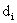
densità del fluido [kg/m3]
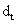
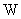
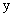
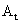
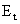
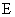
Equazioni:
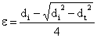
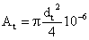
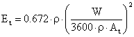
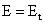 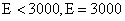
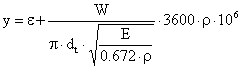
Implementazione informatica:
Vedi subroutine YINOUT.